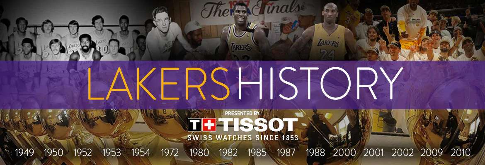

Los Angeles Lakers, American professional basketball team based in Los Angeles. The Lakers are one of the most successful and popular professional franchises in all American sports. The franchise has won a combined 16 Basketball Association of America (BAA) and National Basketball Association (NBA) titles, second in league history to their rival the Boston Celtics.
The franchise that would become the Lakers was founded in 1946 as the Detroit Gems and played in the National Basketball League (NBL). The team moved to Minneapolis, Minnesota, in 1947, and its name was changed to the Lakers to reflect the Minnesota state nickname, “Land of 10,000 Lakes.” That same year the Lakers acquired George Mikan, who became professional basketball’s first dominant “big man” and the first in a series of great Laker centres. The Lakers joined the BAA (the official precursor of the NBA) for the 1948–49 season and won the final BAA championship. The NBA was formed in 1949, and Mikan and the Lakers—which also featured future Hall of Famers Jim Pollard, Slater Martin, Vern Mikkelsen, and (from 1953) Clyde Lovellette—won four of the first five league titles, establishing professional basketball’s first dynasty.
The Lakers then entered a period of a relative lack of success, which reached its nadir in 2012–13. The team added perennial All-Stars Steve Nash and Dwight Howard in the preseason and was considered one of the favourites to win the championship, but it muddled through an inconsistent and injury-plagued campaign that ended with the team’s being swept out of the playoffs in the first round. Howard left in free agency in the off-season, and Bryant and Nash both missed most of the next season with injuries, which greatly contributed to the Lakers’ posting a losing record in 2013–14. Bryant missed much of the following season with another injury, and the Lakers struggled to a 21–61 record. The team was even worse in 2015–16, going a franchise-worst 17–65 in Bryant’s final season before his retirement. The team’s record improved by nine wins in 2016–17, but the extension of the Lakers’ franchise-record playoff drought to four seasons led to a front-office shake-up, which included Magic Johnson’s taking over as the team’s president of basketball operations. Johnson helped lure superstar free agent LeBron James to the Lakers during the 2018 off-season, but the team failed to significantly improve, and Johnson abruptly resigned at the end of the 2018–19 season.